Referensi Utama: Forouzan — Data Communications and Networking
Dosen Pengampu:
Teori
Praktikum & Tugas
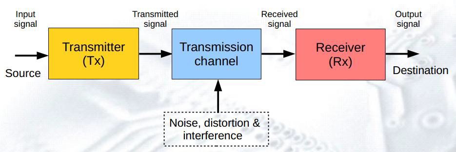
Sistem transmisi dasar
Gelombang analog — kontinu & mulus
Sinyal yang dikirim dari titik A tidak pernah tiba 100% identik di titik B. Selalu ada degradasi akibat tiga faktor:
Tiga gangguan pada saluran transmisi
Sinyal tambahan liar yang tidak diinginkan, bercampur dengan sinyal asli sehingga mengubah isi informasi.
Tiga jenis noise paling umum:
Noise mencemari sinyal di saluran transmisi
Jalan Raya Bagi Sinyal
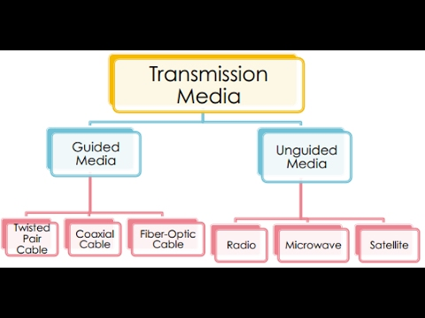
Klasifikasi media transmisi
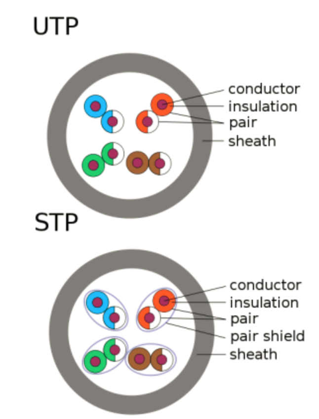
Penampang UTP (atas) & STP (bawah)
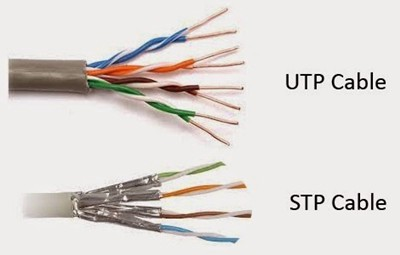
UTP (atas) vs STP (bawah)
| Kategori | Max Bandwidth | Max Data Rate | Penggunaan |
|---|---|---|---|
| Cat 3 | 16 MHz | 10 Mbps | Telepon analog, LAN 10Base-T (usang) |
| Cat 5 | 100 MHz | 100 Mbps | Fast Ethernet (usang) |
| Cat 5e | 100 MHz | 1 Gbps | Standar LAN rumah / kantor kecil. Maks 100m. |
| Cat 6 | 250 MHz | 10 Gbps (55m) | LAN perkantoran modern. Ada spline plastik di tengah. |
| Cat 6a | 500 MHz | 10 Gbps (100m) | Data Center / Backbone LAN. Lebih tebal & berat. |
| Cat 7 | 600 MHz | 10 Gbps+ | High-density Data Center (menggunakan konektor GG45). |
RJ45 (Registered Jack 45) adalah konektor plastik transparan dengan 8 pin tembaga yang menjadi standar kabel UTP.
Susunan warna TIA/EIA 568-B (paling populer di Indonesia):
Pin 1→8, klip RJ45 menghadap ke bawah:
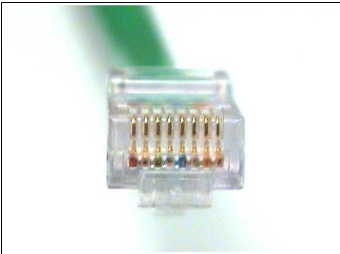
Konektor RJ45 (8 pin tembaga)
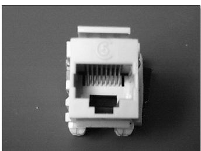
Jack RJ45 pada keystone panel
Kabel koaksial memiliki konstruksi berlapis yang menjadikannya sangat tahan noise:
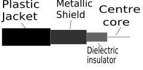
Penampang kabel koaksial
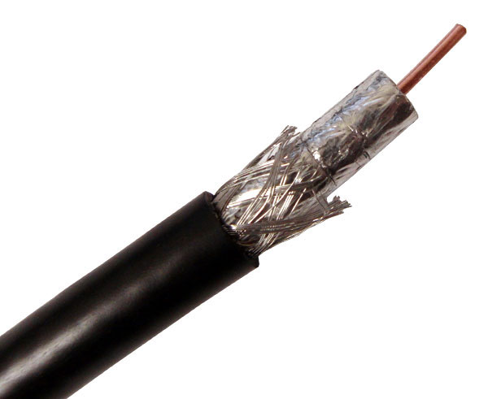
Fisik kabel koaksial yang dikupas
Fiber optik menghantarkan pulsa cahaya (bukan arus listrik) melalui inti kaca/plastik silika berkualitas tinggi.
Prinsip kerja: Total Internal Reflection
Cahaya yang masuk ke inti fiber akan dipantulkan bolak-balik di dinding kaca secara terus-menerus, tidak bocor keluar, hingga mencapai tujuan.
Lapisan struktur fiber:
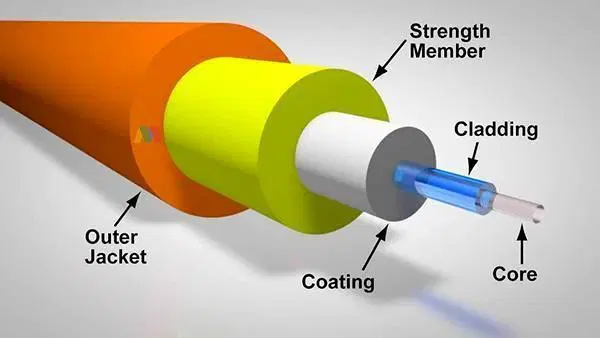
Struktur kabel fiber optik
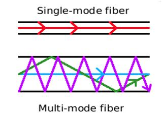
Single-mode (atas) vs Multi-mode (bawah)
Gelombang elektromagnetik merambat bebas tanpa panduan fisik
3 Hz – 1 GHz
Omnidirectional
Tembus tembok
FM, AM, Bluetooth
1 – 300 GHz
Unidirectional
Line-of-Sight
BTS, Wi-Fi, Backhaul
300 GHz – 400 THz
Jarak < 1 m
Tidak tembus dinding
Remote TV, IrDA
Jangkauan global
Latensi tinggi (GEO)
Area terpencil
GPS, Starlink, VSAT
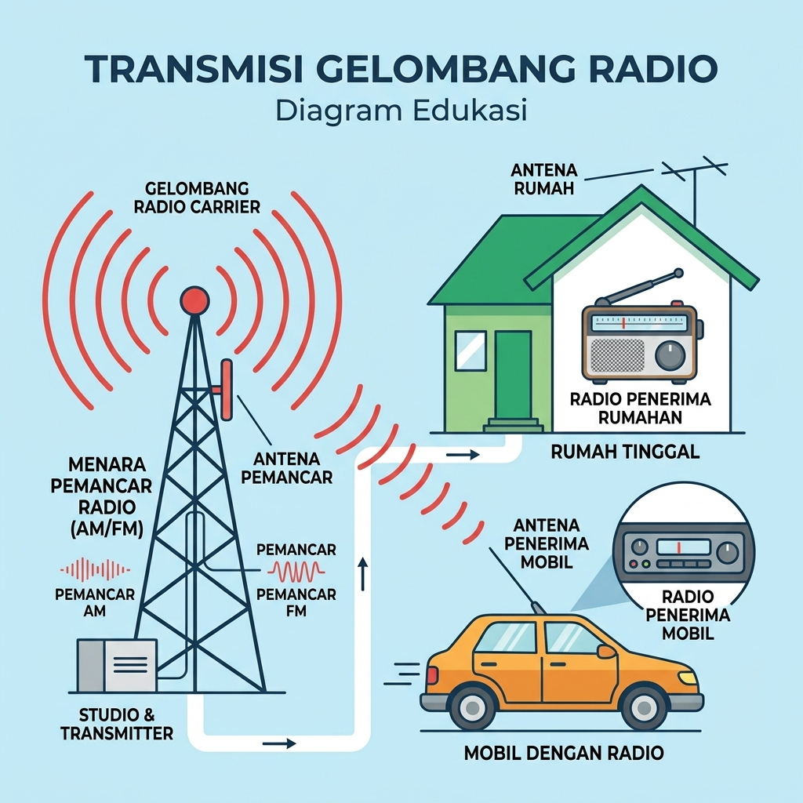
Transmisi gelombang radio AM/FM
Perangkat Penyiaran (Broadcasting)
Perangkat Jaringan Pendek
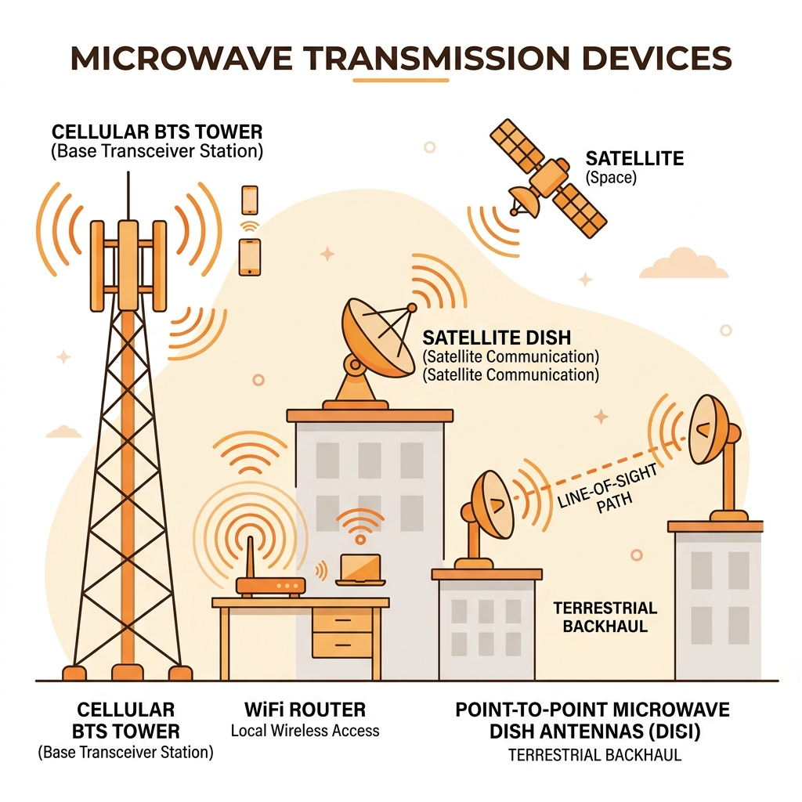
Perangkat microwave: BTS, WiFi, backhaul
Komunikasi Seluler & LAN
Backhaul & Point-to-Point
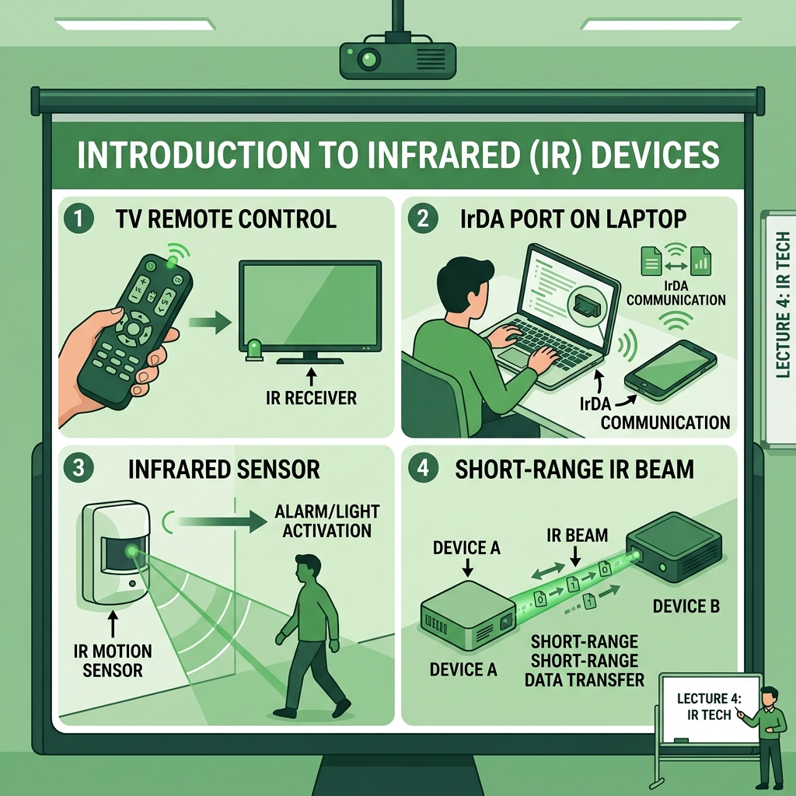
Perangkat berbasis infrared
Kendali Jarak Dekat
Transfer Data & Deteksi
| Orbit | Ketinggian | Latensi | Contoh |
|---|---|---|---|
| GEO Geostationary |
~35.786 km | ~500–700 ms | Viasat, HughesNet, TV Parabola |
| MEO Medium Earth |
2.000–20.000 km | ~100–250 ms | GPS (20.200 km), Galileo, Glonass |
| LEO Low Earth |
200–2.000 km | ~20–40 ms | Starlink (~550 km), OneWeb, Iridium |
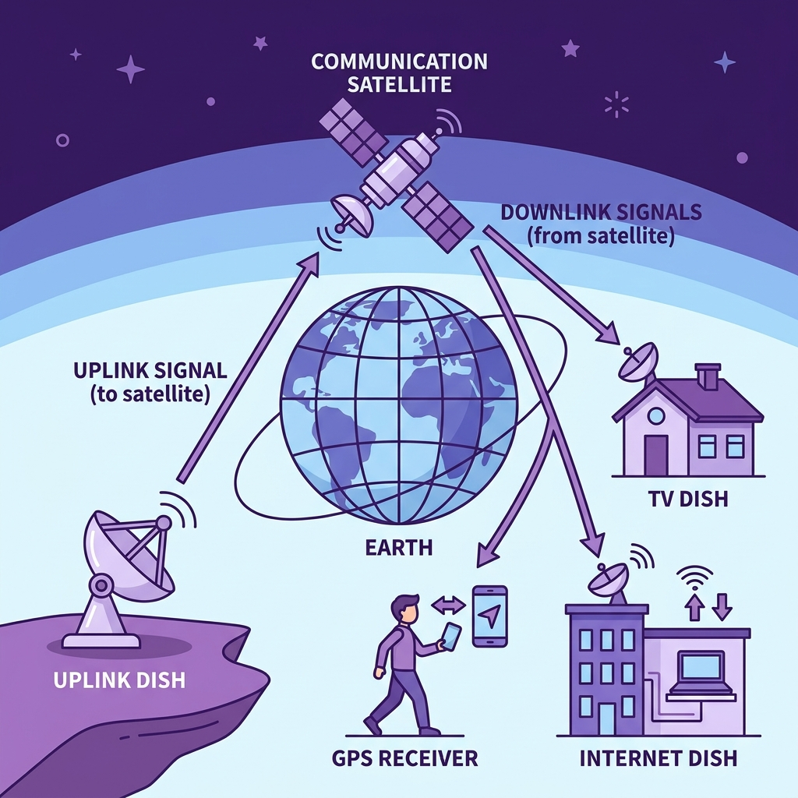
Sistem komunikasi satelit (uplink–downlink)
Internet & Data
Navigasi & Penyiaran
| Jenis | Frekuensi | Arah | Jangkauan | Contoh Aplikasi |
|---|---|---|---|---|
| Gelombang Radio | 3 Hz – 1 GHz | Omnidirectional | Puluhan – ratusan km | AM/FM Radio, Bluetooth, TV Analog, HT |
| Gelombang Mikro | 1 – 300 GHz | Unidirectional (LoS) | Beberapa – puluhan km | Wi-Fi, BTS 4G/5G, Radar, Backhaul |
| Infrared | 300 GHz – 400 THz | Terfokus (LoS ketat) | < 1 meter | Remote TV/AC, IrDA, Sensor PIR |
| Satelit | 1 – 40 GHz (µwave) | Global (downlink luas) | Seluruh bumi | GPS, Starlink, VSAT, TV Parabola |
Crimping RJ45 — sesi hands-on
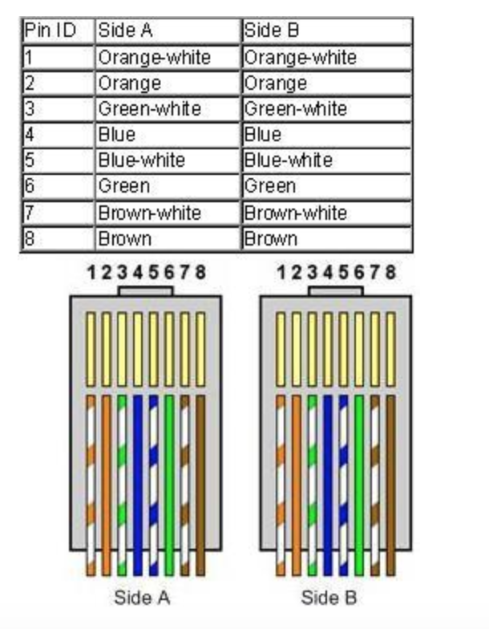
Straight-Through (568-B | 568-B)
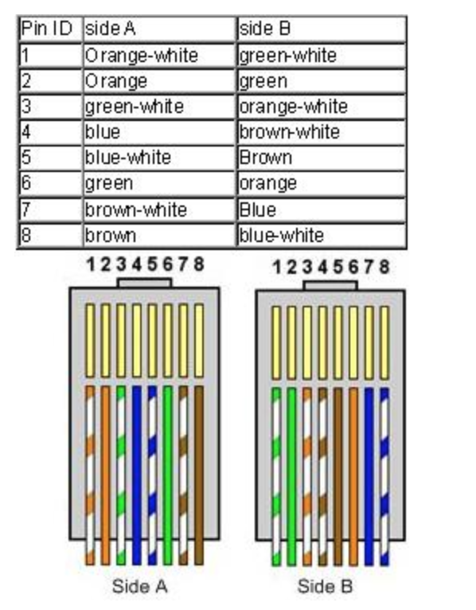
Crossover (568-B | 568-A)
Kedua ujung menggunakan susunan 568-B identik. Digunakan untuk menghubungkan perangkat beda level:
Ujung A = 568-B, Ujung B = 568-A. Digunakan untuk perangkat selevel:
Dikerjakan secara analitik dan tertulis tangan di kertas folio
1. Sebuah perusahaan manufaktur di kawasan industri Lampung ingin menghubungkan 3 gedung yang terpisah sejauh 200 meter satu sama lain. Di sekitar area tersebut terdapat banyak mesin las dan generator listrik besar. Analisislah: jenis media transmisi apa yang paling tepat dipilih, dan jelaskan alasan teknis Anda berdasarkan karakteristik masing-masing media (minimal 3 media dibandingkan).
2. Seorang teknisi memasang kabel UTP Cat 6 sepanjang 95 meter dan mengeluhkan bahwa koneksi sering terputus meski LAN Tester menunjukkan hasil "berhasil". Berdasarkan konsep attenuation, distortion, dan noise, identifikasi kemungkinan penyebab masalah tersebut dan berikan solusi teknisnya.
3. Di era Starlink dan 5G, apakah menurut Anda kabel fiber optik masih relevan sebagai tulang punggung internet global? Argumentasikan posisi Anda dengan membandingkan ketiga aspek: biaya infrastruktur, kapasitas bandwidth, dan keamanan data.
Konsep Sinyal & Gangguan
Guided Media
Unguided Media
Praktikum
Silakan nyalakan alat, siapkan kabel, dan selamat berlatih!